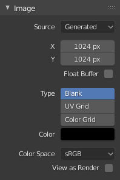

图像设置¶
图像面板¶
- 图像
数据块菜单。
- 新建
+ 新建图像 按钮打开一个弹出窗口以配置 生成 图像。
- 新建
源¶
请参阅支持的 支持的图像格式 。
单张图像¶
静态图像或单帧。
影片¶
打包到容器的帧。
- 反交错(逐行扫描)
删除视频文件中的字段。 例如，如果它是模拟视频并且它具有偶数或奇数隔行扫描字段。
- 帧
- 帧
设置使用的帧范围。
- 起始
序列的全局起始帧，播放的起点。这是全局设置，意味着这会影响所有剪辑用户如影片剪辑编辑器自身、运动追踪约束和合成器节点。
- 偏移量
对影片第一帧进行偏移。在转换场景帧数至视频文件帧数时添加额外的偏移。该选项不影响追踪数据或其他相关数据。
- 匹配影片长度
This button sets the movies frames to the length of the selected movie.
- 自动刷新
在帧变化时自动刷新图像。
- 循环
在最后一帧之后重新开始并重复以创建连续循环。
生成¶
Blender中生成的图像。

Image panel for Generated source.¶ |

The New Image pop-up menu.¶ |
- 宽度，高度
以像素为大小的图像尺寸。
- 颜色
如果创建空白图像，则设置填充颜色。
- 类型
- 空白
创建单个指定颜色的空白图像。
- UV栅格图
创建一个在每个正方形中带有彩色十字(+)的棋盘图案。
- 彩色栅格图
创建一个更复杂的彩色网格，其中的字母和数字表示网格中的位置。 它可用于测试UV的映射方式，并减少拉伸或变形。
- 32 位浮点数
创建一个32位图像。 这是一个更大的文件尺寸，但比标准的8位图像拥有更多的颜色信息。 对于近距离和大的渐变，使用32位图像可能更好。
- 平铺
Creates an image with support for UDIM. This option creates the first
1001tile; more tiles can be added later in the UDIM Tiles panel.
通用选项¶
- 文件
用于替换或打包文件。
- 打包
将资源嵌入到当前blend文件。
- 路径
关联文件的路径。
- 打开
打开 文件浏览器 以从驱动器中选择文件。
- 重新载入
重新载入文件。在外部应用程序中重新编写文件时很有用。
- 色彩空间
色彩空间。
- sRGB
标准RGB显示空间。
- 线性
线性709(全范围)。Blender原生线性空间。
- Linear ACES
ACES线性空间。
- XYZ
标准线性XYZ空间。
- Non-Color
用于包含非色彩数据的图像的色彩空间 (如法线贴图)。
- Raw
与Non-Color相同。
- 电影日志
Filmic视图变换的中间日志颜色空间。
- Half Float Precision
Load the image as having only a Bit Depth of 16 bit per channel instead of 32 bit which saves memory.
- 预览为渲染结果
在屏幕上显示此图像时应用 颜色变换 。
- 使用多视图
参考 多视图。
- Alpha
在图像文件中表示alpha，在保存和加载图像时进行转换。 请参阅 Alpha通道。
- 直通型
分别存储RGB和alpha通道，使用alpha作为掩码，也称为没有关联的alpha。常用于图像编辑应用程序和PNG等文件格式。 这样可以保留部分图像中的颜色为零alpha。
- 预乘型
存储与alpha相乘的RGB通道，也称为关联alpha。 渲染和由OpenEXR等文件格式使用的自然格式。 与直通型alpha不同，这可以正确地表示像火一样的自发光效果。
- 通道打包
不同的图像打包在RGB和alpha通道中，它们不应相互影响。 游戏引擎通常使用通道打包来节省内存。
- 无
忽略文件中的Alpha通道并使图像完全不透明。